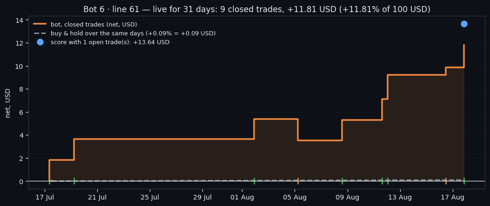
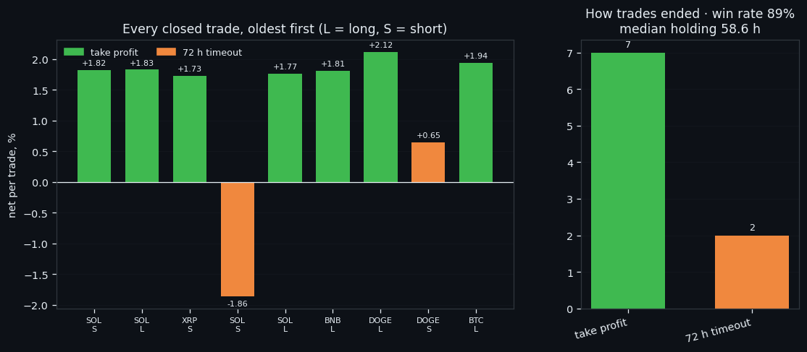
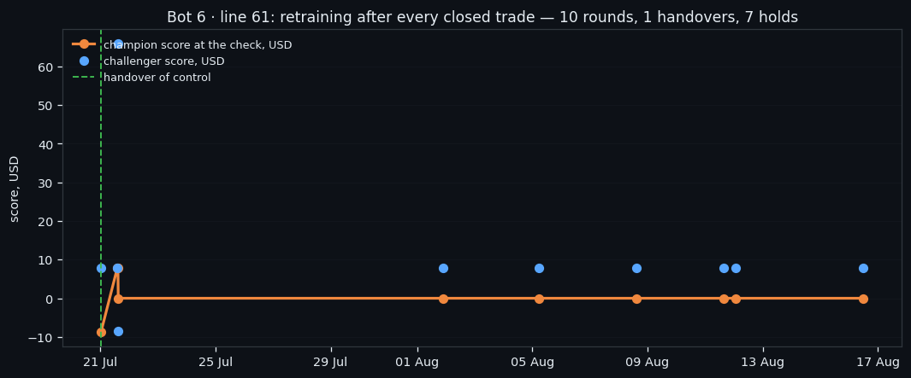

Bot 6, Line 61: Nine Trades, Eight Winners, and Why We Are Not Celebrating
Line 61 of Bot 6 holds one position at a time and has been live since 17 July 2026: 31 days, 9 closed trades, +11.81 USD on a 100 USD slot, win rate 89%. Its entry gate is agreement between two independent models plus a context check; its exits are a 2% target, a 4% stop and a hard 72-hour clock. This is the complete record, including the comparison with its twin line running the identical recipe — which is the part that keeps us honest.
① One trade at a time: how line 61 works
Line 61 is one instance of Bot 6 — a bot that holds **one position at a time, across all six coins**, with a single slot of 100 USD. It has been running on live data since 17 July 2026, on paper, with a fee of 0.15% per action.
Its entry rule is a gate made of agreement rather than of thresholds. An ensemble of models scores every coin; a trade is allowed only when the ensemble's confidence clears τA = 0.618, a second, independent model agrees on the same side, and a context check confirms the wider market state. If two of the three disagree, there is no trade — and there is no fallback, no "trade the best of a bad lot". The bot simply waits.
Exits are equally plain: take profit 2%, stop loss 4%, and a hard 72-hour timeout that closes anything still open at whatever price is there. That timeout is the part to watch in the results below.
The recipe was chosen on a grid of 30 settings, on training episodes only, with one rule that threw out otherwise attractive candidates: a setting had to produce a signal in at least 60% of episodes. A gate that opens twice a year will show a wonderful win rate and teach you nothing. On the validation period the chosen recipe made +7.88 USD over 8 trades, with a median wait of 12.8 hours before a signal and 12.8 hours in the position.
There is one more moving part. After every closed trade, a challenger is retrained on the freshest data and compared with the running version; the better one keeps the line. Line 61 is on version 4 after 10 such rounds.

② 31 days live: the numbers
As of 2026-08-17, after 31 days live:
| measure | value | |---|---| | closed trades | 9 | | net result | +11.81 USD (+11.81% of 100 USD) | | win rate | 88.9% | | average trade | +1.312% · median +1.810% | | median holding | 58.6 h | | how they ended | take profit — 7, 72 h timeout — 2 | | best / worst | DOGE +2.12% / SOL -1.86% | | buy & hold, same coins and days | +0.09% on average (BNB +7.3%, BTC +1.8%, DOGE -2.1%, SOL +1.5%, XRP -7.9%) |
Open at the time of writing: BTC long +1.98% after 31 h — +1.83 USD unrealised in total.
One trade at a time over 31 days means roughly one closed position every 3.5 days — and that number is the most informative one in the table. This bot spends the overwhelming majority of its life flat, waiting for its three conditions to line up. Every result it produces has to be read with that in mind: with 9 closed trades, a single outcome moves the win rate by 11 percentage points.
The exits column is where the mechanism shows through. take profit — 7, 72 h timeout — 2 — and the split between "hit the target" and "ran out of time" says more about the bot than the profit does. A position closed by the clock is one where the entry was not wrong enough to hit the stop and not right enough to hit the target within three days.

③ Nine trades, eight winners, and why that is not proof
7 of line 61's 9 closed trades hit their take profit, the win rate is 89%, and the line is +11.81 USD ahead on a 100 USD slot. This is the best live result in the project so far, and this section exists to argue against reading too much into it.
Start with the sample. 9 trades. If this gate were a coin flip, the chance of seeing 8 or more winners out of 9 is 0.020 — about one run in 51. Unlikely, then, but nowhere near proof: we run several bot lines, and one of several coin flips landing well is the ordinary case, not the remarkable one.
Then look at its twin. Line 60 runs the same recipe, the same gate, the same six coins, launched two days earlier, and closed 9 trades for +0.68 USD at a 44% win rate. Nothing distinguishes the two systems except which entries each happened to catch. If line 61's numbers proved the method works, line 60's would prove it does not — and both cannot be true.
What is solid in this line has nothing to do with the profit. The exits: a median holding of 58.6 hours, with take profits dominating the timeouts, means the gate tends to fire in front of moves that resolve inside the bot's three-day window. That is a statement about the entry mechanism, it is consistent across the trades, and it does not depend on the size of the wins.
Buy & hold over the same days and coins: +0.09% on average (BNB +7.3%, BTC +1.8%, DOGE -2.1%, SOL +1.5%, XRP -7.9%). So the line is ahead of holding, by a margin that a single bad trade would erase. It keeps running unchanged, it retrains a challenger after every close, and its balance goes out in a daily report — including the days it gives some of this back.

If this changed how you read the tape, the natural next step is Volume Is the Fuel — Not the Steering Wheel — We recorded the Binance order book every second for six coins over five months and ran eighteen tests on what volume really does.
Volume Is the Fuel — Not the Steering Wheel
We recorded the Binance order book every second for six coins over five months and ran eighteen tests on what volume really does.
About Market Research Lab — What We Collect and Why
Most market commentary is storytelling.
From Calm to Calm: a Standard for What Counts as a Signal (BTC)
We stopped defining market signals with a stopwatch.
The Wall That Goes Quiet: What Resting Liquidity Predicts
We measured resting limit liquidity sitting on both sides of the book second by second across six coins, and asked the only question that matters:….
Comments
Discussion is powered by GitHub. Enable it by adding secrets/giscus.json (repo IDs from giscus.app).